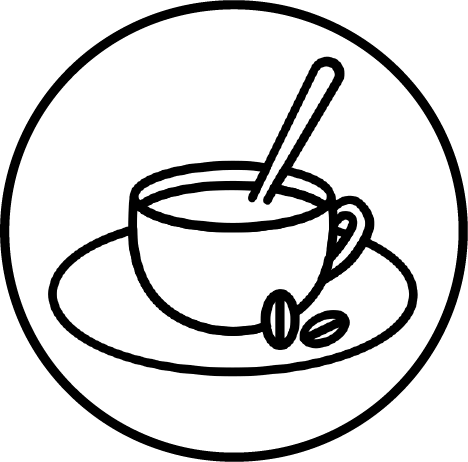

Die Kaffeerösterei Tourk hat sich dem Rösten von gutem Kaffee verschrieben.
Wir arbeiten daran handgemachten Kaffee anzubieten. Fokussiert auf
schonend gerösteten Spezialitätenkaffee, mit einem Blick auf Fairness und
Nachhaltigkeit im Produktionsprozess.
HANDARBEIT
Jeder Kaffee wird in liebevoller Handarbeit hergestellt.
Die Bohnen werden schonend und langsam im Trommelröstverfahren geröstet,
von Hand verpackt und verschickt.
Hier gibt es keine Massenware, nur guten Kaffee.
NACHHALTIGKEIT
Wir sind bedacht darauf, Kaffee aus verantwortungsvollen Quellen,
mit fairer Bezahlung der Arbeiter, mit umweltschonenden Mitteln zu beziehen und
diesen möglichst nachhaltig weiter zu verarbeiten. Die Umwelt und der Mensch
liegen uns am Herzen.
GENUSS
Im Mittelpunkt der Arbeit steht immer der Genuss.
Dieser entsteht sowohl durch den guten Geschmack,
die schonende Art der Röstung und das Wissen,
einen im Einklang mit Mensch und
Natur produzierten Kaffee zu genießen.
Über Uns:
DIE WERTE
Die Kaffeerösterei Tourk trinkt gerne guten Kaffee und daher steht an
oberster Stelle der Genuss. Was das bedeutet, können Sie unten genauer erfahren.
Die Kaffeerösterei Tourk vertritt die feste Meinung,
dass beim Kaffeetrinken der Genuss im Mittelpunkt stehen sollte.
Hierfür spielen viele Faktoren eine Rolle.
Nicht nur der Geschmack entscheidet über Genussmomente.
Um entspannt den Kaffee zu genießen sind auch die Hintergründe für sie entscheidend.
FAIRNESS
Um richtig genießen zu können, möchte Die Kaffeerösterei Tourk wissen,
dass alle hinter dem Kaffee fair behandelt werden.
Leider ist der Kaffeepreis in den letzten Jahren soweit abgesunken,
dass viele Arbeiter und Farmer nicht mehr nur vom Kaffee leben können.
Das ist eine tragische Entwicklung. Um dem entgegen zu wirken,
sind wir immer auf der Suche nach Kooperativen und direkten Kontakten zu Farmern.
NACHHALTIGKEIT
Die Kaffeerösterei Tourk ist sich bewusst, dass es nur diese eine Erde gibt,
auf der Kaffee pflanzen wachsen. Und um diese zu erhalten,
sind wir bemüht möglichst nachhaltig zu arbeiten.
Von den umweltschonender hergestellten Tüten ohne Aluminium bis hin zur Druckfarbe
aus umweltfreundlichen Pflanzenölen ist schon jetzt alles möglichst natürlich gehalten.
Wir sind stets auf der Suche nach Innovationen, die es ermöglichen,
alles rund um den Kaffeegenuss noch nachhaltiger zu gestalten.
TRANSPARENZ
Um Kunden einen guten Überblick über die eigene Arbeit zu geben,
möchte die Kaffeerösterei Tourk möglichst transparent sein.
Transparenz gilt sowohl nach innen im Team als auch nach außen.
Es ist bemüht möglichst offen die Wertschöpfungskette, wo der Kaffee herkommt,
wie er verarbeitet wird, welche Materialien im Prozess verwendet werden und
wer die Partner sind, darzustellen.
Für weitere Fragen dazu hat sie immer ein offenes Ohr.
Alles über Kaffee:
HERKUNFT
Vom Anbau bis zu deiner Tasse ist es ein weiter Weg Kaffee ist nicht
nur dein Begleiter, sondern die Lebensgrundlage hunderttausender Menschen weltweit.
Deshalb reisen wir jedes Jahr in die Ursprungsländer unserer Kaffees.
Wir wollen mit eigenen Augen sehen, wo der Kaffee wächst und die Menschen kennenlernen,
die ihn anbauen.
ANBAU
Die besten Kaffee-Anbaubedingungen erstrecken sich über den gesamten
Äquator – im sogenannten Kaffeegürtel. Bei Anbau und Ernte liegt in Sorgfalt
und Timing das Geheimnis. In diesem Artikel fassen wir zusammen, unter welchen
Bedingungen Kaffee am besten wächst und worauf es bei Ernte und Aufbereitung ankommt.
Beim Anbau von Kaffee findet sich Parallelen zum Wein.
Die Zusammensetzung des Bodens sowie die Sonnen- und Niederschlagsmenge während der
Reifezeit wirken sich stark auf den Kaffeegeschmack aus. Die sensiblen Kaffeepflanzen benötigen
das ganze Jahr über, tags wie nachts, ein ausgeglichenes Klima ohne extreme Hitze und Kälte
sowie ausreichend Niederschlag und viel Schatten.
Die Bodenqualität spielt eine große Rolle, denn die Kaffeepflanze benötigt einen nährstoffreichen Boden.
Dieser hat im Idealfall einen pH-Wert zwischen 5 und 6, ist also leicht sauer. Insbesondere die in Äthiopien
sehr häufigen vulkanischen Böden haben diese Eigenschaft und sind darüber hinaus sehr nährstoffreich.
Wie beim Wein spricht man bei der Bodenbeschaffenheit vom Terroir.
Kaffeesträucher werden bis zu 3,5 Meter groß und kommen in wilder Form nur noch in Äthiopien vor.
Die Sträucher tragen Früchte, die wir Kaffeekirschen nennen. Kaffeebohnen sind die Samen dieser Kirschen.
Anders als bei hiesigen Kirschen besteht der Kern aus zwei Teilen bzw. zwei Kaffeebohnen.
ERNTE
Die Reifezeit der Kaffeekirschen beträgt bei unseren äthiopischen Hochlandkaffees
bis zu zehn Monate. Im Laufe der Zeit ändern die Kirschen ihre Farbe von grün über gelb zu rot.
Erst wenn sie rot sind, bilden die Kirschen die Grundlage für aromatischen
Rohkaffee und werden geerntet.
Während der Ernte dürfen nur die roten Kirschen gepflückt werden.
Das Fruchtfleisch der Kaffeekirschen in diesem Zustand schmeckt fruchtig und leicht süßlich.
Weder grüne, noch überreife schwarze Kirschen dürfen geerntet werden.
Denn beides würde den Geschmack des Kaffees sehr stark und negativ beeinträchtigen.
Wie unreife Trauben beinhalten grüne Kirschen nur unausgereifte Säuren und wenig
aromatischen Kaffeegeschmack. Überreife Kirschen hingegen schmecken faulig und fermentiert.
Seminare
Von Aroma bis Zubereitung: Unsere Kaffee-Seminare für Sie!
Wussten Sie schon, dass die belebende Wirkung des Kaffees einst ein
äthiopischer Ziegenhirte entdeckt haben soll, als seine Herde auch nachts
putzmunter blieb, nachdem sie Beeren einer ungewöhnlichen Pflanze
gefressen hatte? Diese und weitere spannende Details
rund um den Kaffee-Genuss erfahren Sie bei uns:
Röstung: Das Ein und Alles
Immer montags*
Sie erleben sämtliche Schritte von der grünen bis zur gerösteten Bohne und
erfahren etwas über die Vorzüge der einzelnen Kaffeesorten.
Wir laden Sie ein zur Verkostung und schulen Ihre Sinne:
So können Sie Ihren Trinkgenuss steigern und Familie und Freunde überraschen.
Termin: Montag, 18.30 bis 21 Uhr
Preis: 50,– €
Brühkaffee: Da steckt mehr drin
Immer mittwochs*
Sie werden sich wundern, welche aromatische Vielfalt mit dieser altbekannten
Zubereitungsart möglich ist. Wir zeigen Ihnen verschiedene Brühmethoden
und Sie kosten das Ergebnis.
Sie probieren selbst Ihre Lieblingsmethode aus und perfektionieren sie.
Termin: Mittwoch, 18.30 bis 21 Uhr
Preis: 45,– €
Aufgeschäumt: Das lässt sich sehen
Immer freitags*
Sie erfahren, wie der Cappuccino zu seiner perfekten Haube kommt.
Sie üben das Schäumen und lernen, wie sich der Milchschaum zu verschiedenen
Motiven formen lässt. Wir verraten Ihnen weitere Tricks,
wie auch zuhause eine Tasse Kaffee zum Augenschmaus wird.
Termin: Freitag, 18.30 bis 21 Uhr
Preis: 55,– €
* Bitte beachten Sie: An Feiertagen finden keine Kaffee-Seminare statt.
Kontakt
Sie möchten mehr über uns wissen oder es gibt Fragen?
Dann schreiben Sie uns doch:
Es gilt die Datenschutzerklärung.

IMPRESSUM
Kaffeerösterei Tourk GbR
Vertretungsberechtigte Gesellschafter: Hendrik Tourk, Sabine Wittenauer
Lindenallee 47
13156 Berlin
Deutschland
Telefon: 0173 23718138
Mail: post@kaffee-tourk.de
Verantwortlich gemäß § 18 MStV:
Hendrik Tourk
Lindenallee 47
13156 Berlin
Die Europäische Kommission stellt eine Plattform zur
Online-Streitbeilegung (OS) bereit, die Sie hier finden: https://ec.europa.eu/consumers/odr/.
Zur Teilnahme an einem Streitbeilegungsverfahren vor einer Verbraucherschlichtungsstelle sind
wir nicht verpflichtet und nicht bereit.